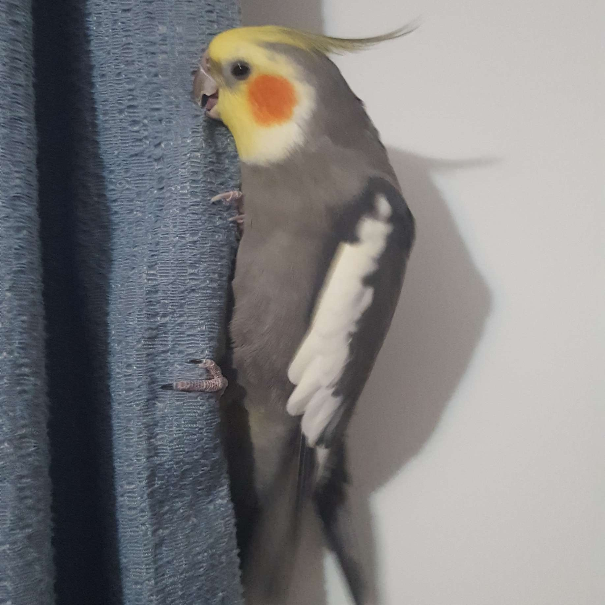
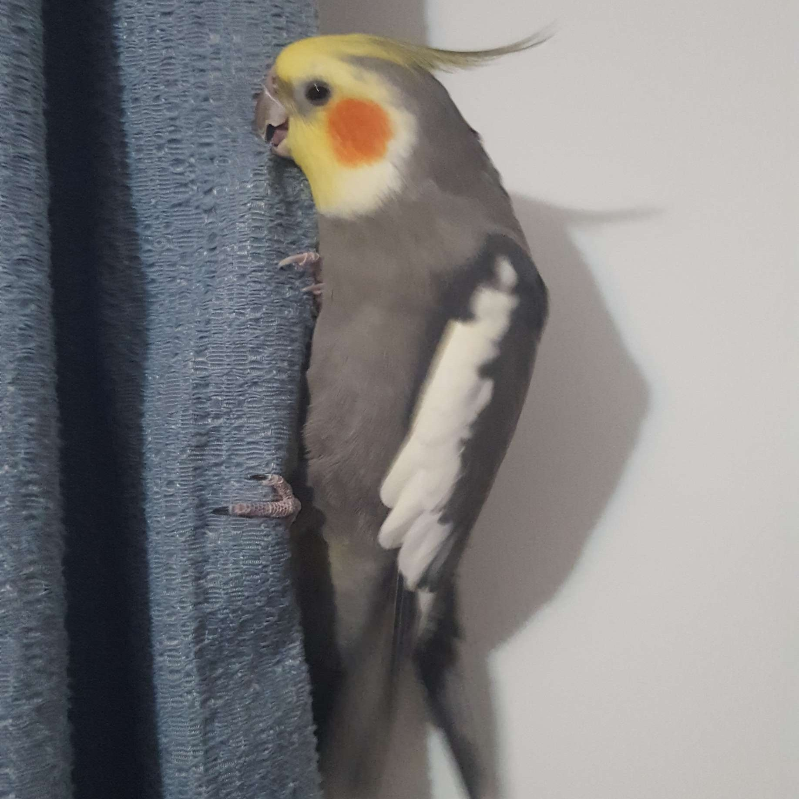
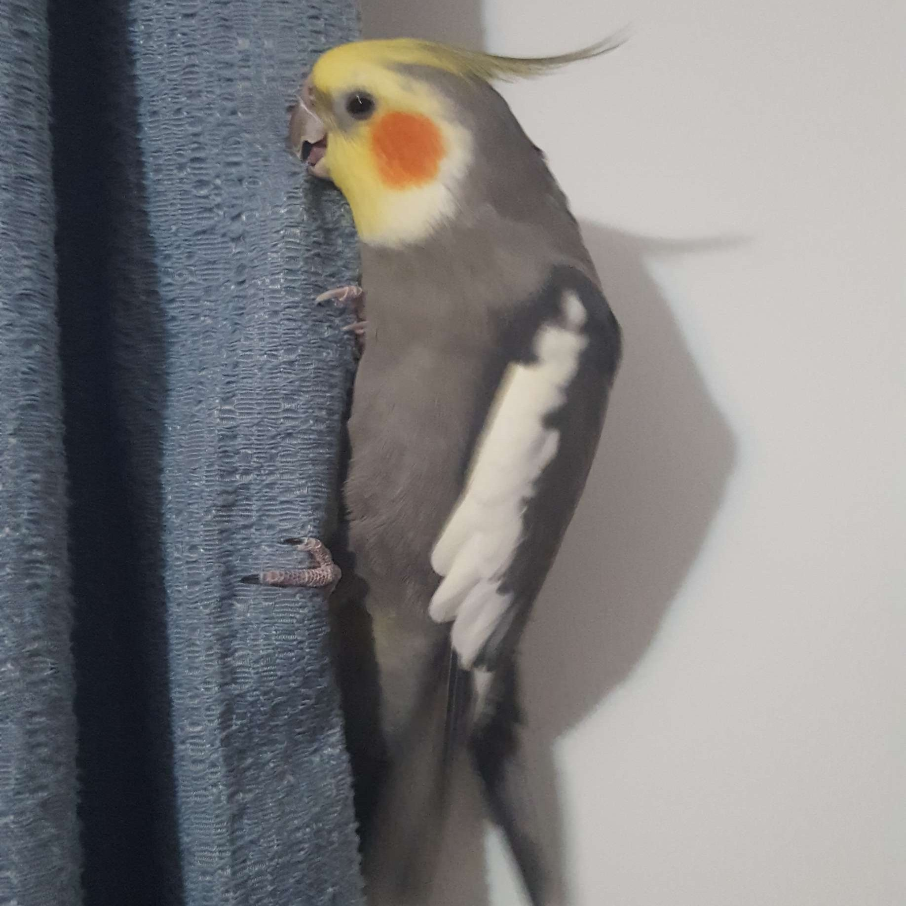
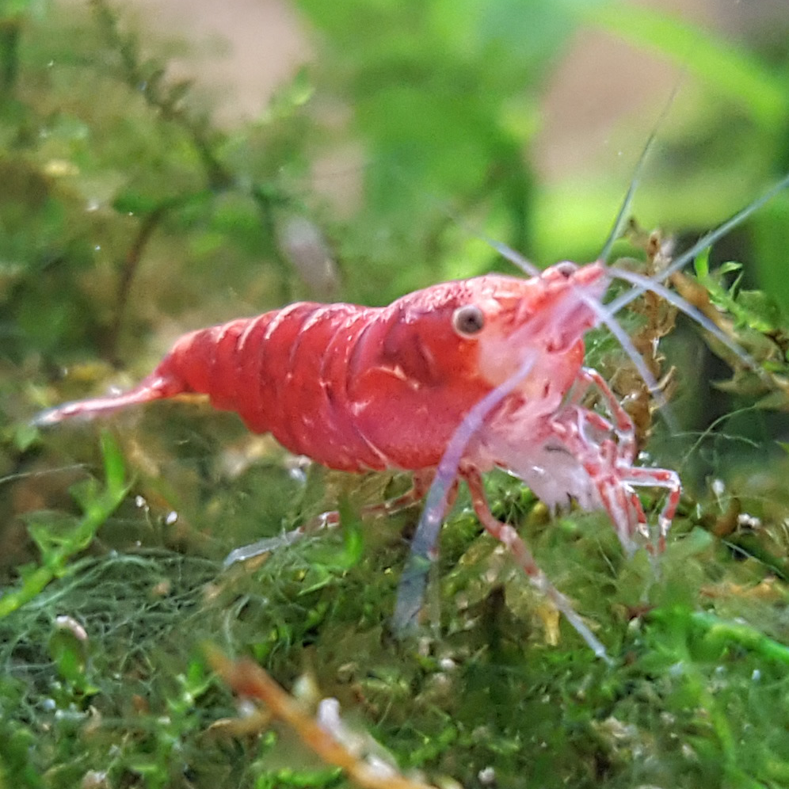
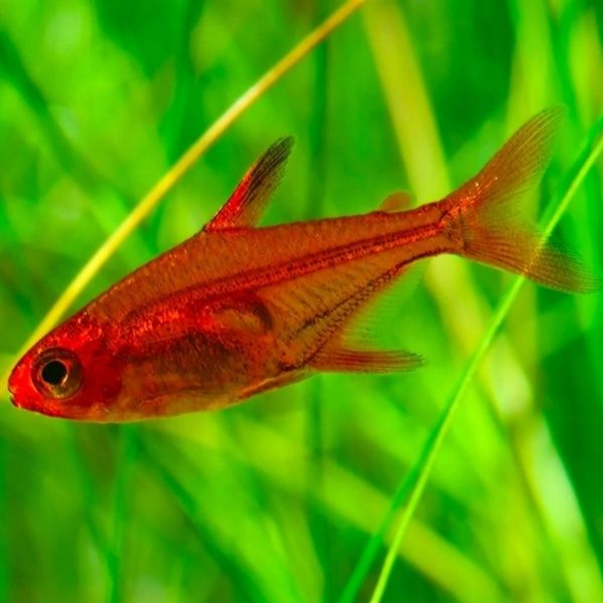

My cockatiel is the most energetic animal in my home. He is filled with curiosity and loves to explore his environment by climbing and flying around.
Some other interesting things about BB are...

 

My cockatiel is the most energetic animal in my home. He is filled with curiosity and loves to explore his environment by climbing and flying around.
Some other interesting things about BB are...

Like any other parrot, BB is able to learn and remember many distinct sounds. BB knows how to say his own name and can even sing a few songs! The first song he ever learned was "Pop Goes the Weasel" when he was about a year old and he still remembers how to sing it to this day! After doing a little searching, I found the video my brother used to teach him the song which can be seen below.
Maintaining an aquarium of any size can be pretty challenging. An aquarium is basically a miniature ecosystem and a lot of variables have to be taken into account. It usually takes a few months to finish setting up an aquarium from the time researching and planning, to actually building the aquarium. I think that's part of the appeal, all the work and patience turning into something that all works together. One of my aquariums is a community aquarium, meaning that there are multiple species living with each other. The tank mostly has cherry shrimp, small freshwater shrimp that get their name from their bright red color. Along with the shrimp, there is a school of ember tetras. Both animals are not aggressive, live in similar water parameters and enjoy the cover of dense foliage.
| Name | Diet | Image |
| Cherry Shrimp | Omnivore |  |
| Ember Tetra | Omnivore |  |
| Bladder Snail | Detritivore |  |
| Bumblebee Snail | Carnivore |  |